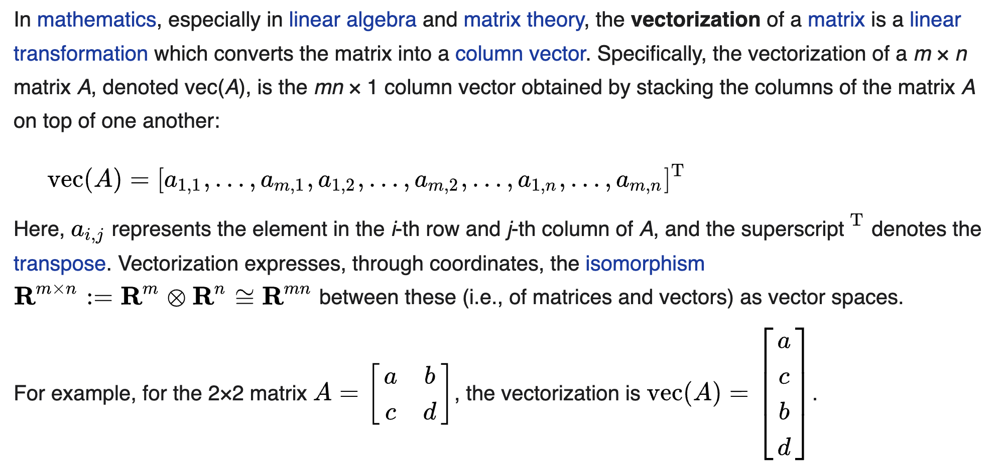
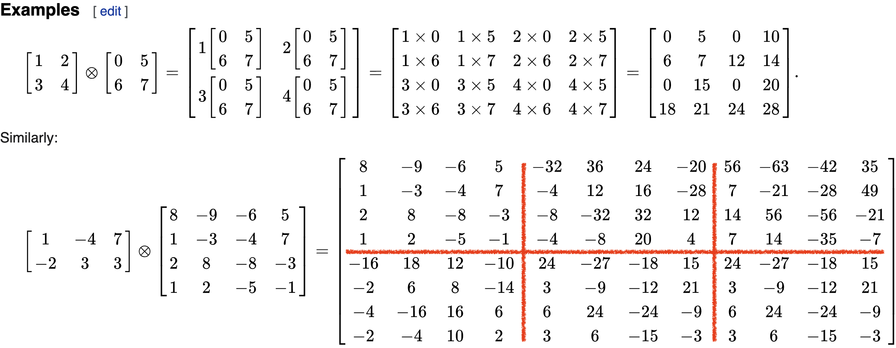
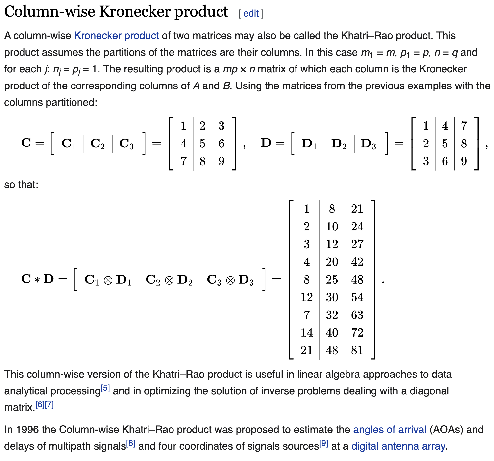
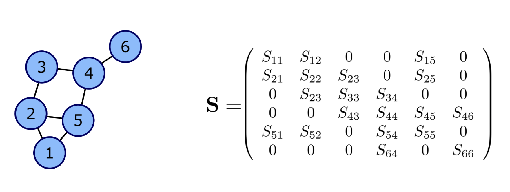
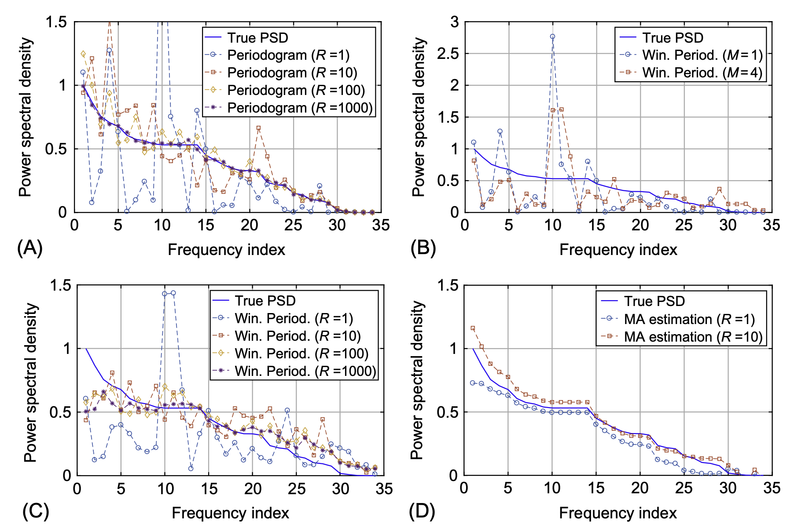
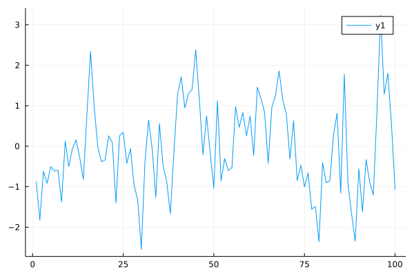
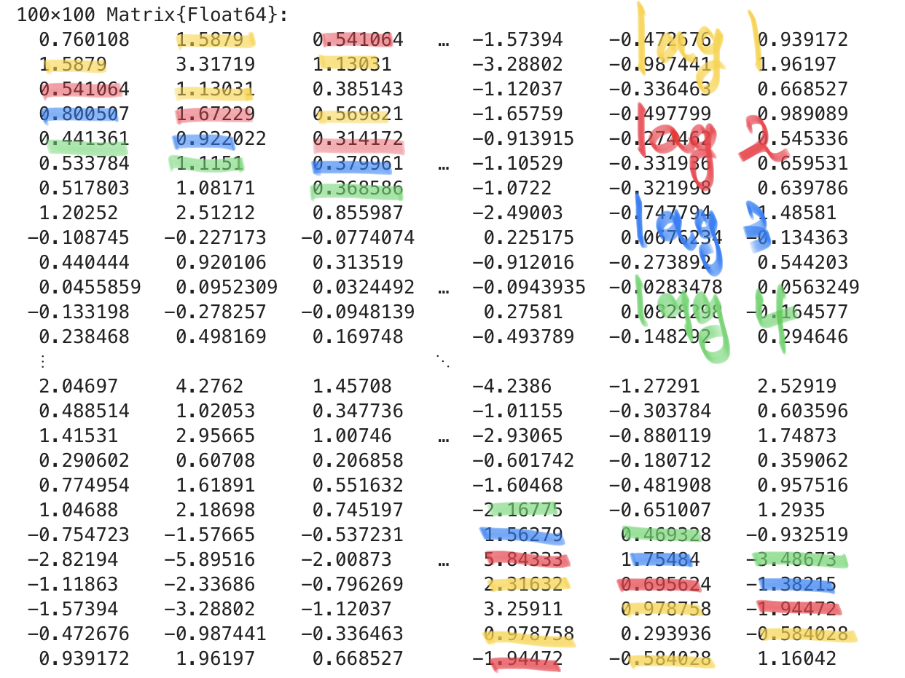

using LinearAlgebra, Plots, FFTW, StatisticsPreliminary Study
Vectorization (mathematics)

(예제)
A= [1 2
3 4]2×2 Matrix{Int64}:
1 2
3 4vec(A)4-element Vector{Int64}:
1
3
2
4Kronecker product
크로네커곱의 정의는 아래와 같다.
\[{\bf A} \otimes {\bf B} =\begin{bmatrix} a_{11}{\bf B} & a_{12}{\bf B} & \dots & a_{1m}{\bf B} \\ a_{21}{\bf B} & a_{22}{\bf B} & \dots & a_{2m}{\bf B} \\ \dots & \dots & \dots & \dots \\ a_{n1}{\bf B} & a_{n2}{\bf B} & \dots & a_{nm}{\bf B} \\ \end{bmatrix}\]
두 행렬 \({\bf A}_{m\times n}\), \({\bf B}_{p\times q}\)의 크로네커곱 \({\bf A}\otimes {\bf B}\)의 차원은 \(mp \times nq\) 가 된다. 계산예시는 아래와 같다.

크로네커곱에 대한 성질들이 위키에 많이 있으니 참고하면 좋다.
(예제1)
A= [1 2
3 4]
B= [0 5
6 7]
C = kron(A, B)4×4 Matrix{Int64}:
0 5 0 10
6 7 12 14
0 15 0 20
18 21 24 28(예제2)
A= [1 -4 7; -2 3 3]
B= [8 -9 -6 -5; 1 -3 -4 7; 2 8 -8 -3; 1 2 -5 -1]
C = kron(A, B)8×12 Matrix{Int64}:
8 -9 -6 -5 -32 36 24 20 56 -63 -42 -35
1 -3 -4 7 -4 12 16 -28 7 -21 -28 49
2 8 -8 -3 -8 -32 32 12 14 56 -56 -21
1 2 -5 -1 -4 -8 20 4 7 14 -35 -7
-16 18 12 10 24 -27 -18 -15 24 -27 -18 -15
-2 6 8 -14 3 -9 -12 21 3 -9 -12 21
-4 -16 16 6 6 24 -24 -9 6 24 -24 -9
-2 -4 10 2 3 6 -15 -3 3 6 -15 -3Khatri–Rao product
카트리-라오곱은 매트릭스 \({\bf A}\)와 \({\bf B}\)가 같은 차원의 블락매트릭스로 정의될때 각 서브매트릭스의 크로네커 곱으로 정의된다. 정의와 계산예시는 아래와 같다.

또 다른 계산예시는 아래와 같다. 이 예제는 중요하니까 구현해보자.

(예제1)
C= [1 2 3
4 5 6
7 8 9]
D= [1 4 7
2 5 8
3 6 9]3×3 Matrix{Int64}:
1 4 7
2 5 8
3 6 9hcat([kron(C[:,i],D[:,i]) for i in 1:3]...)9×3 Matrix{Int64}:
1 8 21
2 10 24
3 12 27
4 20 42
8 25 48
12 30 54
7 32 63
14 40 72
21 48 81이건 자주 쓸일이 있을것 같으니까 함수로 저장하자.
columnwise_kron =
(C,D) -> hcat([kron(C[:,i],D[:,i]) for i in 1:size(C)[2]]...)#181 (generic function with 1 method)columnwise_kron(C,D)9×3 Matrix{Int64}:
1 8 21
2 10 24
3 12 27
4 20 42
8 25 48
12 30 54
7 32 63
14 40 72
21 48 81그래프 표현
아래의 그림을 살펴보자.

오른쪽의 \({\bf S}\)는 무시하고 왼쪽의 그래프만 살펴보자. 이 그림에는 6개의 노드가 있고 각각의 노드는 저 마다의 연결구조를 가진다. 이러한 연결구조는 \({\bf G}=({\bf N},{\bf E})\) 으로 표현할 수 있는데 여기에서 \({\bf N}\)은 노드들의 집합이고 \({\bf E}\)는 엣지들의 집합이다.1 보통 \({\cal E}\)는 복잡하므로 연결정보를 매트릭스 \({\bf E}\)로 표현하는데 이러한 \({\bf E}\)를 인접행렬이라고 부른다. 인접행렬의 각 원소는 \(E_{ij}= \begin{cases} 1 & (i,j) \in {\cal E} \\ 0 & o.w \end{cases}\) 와 같이 정의한다. 이 그림의 경우 \({\cal N}\) 와 \({\cal E}\), \({\bf E}\) 는 아래와 같다.
1 노드 \(i\)에서 노드 \(j\)로 향하는 연결이 있다면 \((i,j) \in {\cal E}\)이다.
\({\cal N}=\{1,2,3,4,5,6\}\)
\({\bf E}=\begin{bmatrix} 0 & 1 & 0 & 0 & 1 & 0 \\ 1 & 0 & 1 & 0 & 1 & 0\\ 0 & 1 & 0 & 1 & 0 & 0 \\ 0 & 0 & 1 & 0 & 1 & 1 \\ 1 & 1 & 0 & 1 & 0 & 0 \\ 0 & 0 & 0 & 1 & 0 & 0 \end{bmatrix}\)
\({\cal E} = \{(i,j) : E_{ij}=1 \}\)
GSO
후에 자세히 서술하겠지만 전통적인 시계열분석기법을 그래프신호로 확장하기 위해서는 단지 퓨리에변환 대신에 그래프퓨리에 변환을 사용하면 된다. 즉 퓨리에변환을 일반화한 그래프퓨리에변환을 잘 정의하면 된다.
전통적인 신호처리 영역에서의 퓨리에변환은 시계열자료의 인접성을 의미하는 행렬 \({\bf B}\)2의 고유행렬의 켤레전치로 정의할 수 있다. 이를 이용하면 그래프 퓨리에변환은 그래프자료의 인접성을 의미하는 행렬3의 고유행렬의 켤레전치로 정의할 수 있음을 유추할 수 있다. 즉 비유클리드 자료에서도 \({\bf B}\)에 대응하는 어떠한 매트릭스가 정의되어야 하는데 (그리고 이 매트릭스는 그래프자료의 인접성에 대한 정보가 있어야 한다) 이 매트릭스를 \({\bf S}\)라고 정의하고 grahp shift operator (GSO) 라고 이름 붙인다.
2 원래는 평행이동을 의미하는 행렬이지만, 이걸 인접성을 의미하는 행렬로 해석할 수도 있다. 어차피 인접한 곳으로 이동할 수 있으니까..
3 예를들면 인접행렬 \({\bf E}\)와 같은 행렬
주어진 그래프 \({\cal G}=({\cal N},{\cal E})\) 에 대하여 GSO \({\bf S}\)는 \({\bf E}+{\bf I}\)의 값이 1인 영역에만 값이 있는 어떠한 행렬이다. 다시 아래의 그림을 생각하여 보자.
왼쪽그래프의 GSO는 오른쪽과 같은 행렬 \({\bf S}\)가 된다. 이제 \({\bf S}\) 의 고유벡터행렬을 구한 뒤에 그것의 켤레전치를 \({\bf GFT}\) 행렬로 정의하면 될 것 같다. 문제는 “\({\bf S}\)의 고유벡터행렬이 항상 존재하는가?” 인데, 사실 이게 항상 존재한다는 보장이 없다. 즉 \({\bf S}\)의 고유벡터 행렬이 존재 안할 수도 있다. 따라서 GSO \({\bf S}\)가 고유분해가능하다는 조건이 추가적으로 필요한데 이러한 조건을 만족하는 GSO를 normal GSO라고 부른다. 우리는 당연히 normal GSO에 대해서만 관심이 있으므로 앞으로 특별한 언급이 없는한 GSO는 모두 normal GSO라고 가정한다.
12.2.1. Power Spectral Density
Djuric and Richard (2018) 의 Chap 12.2.1, Chap 12.3
Djuric, Petar, and Cédric Richard. 2018. Cooperative and Graph Signal Processing: Principles and Applications. Academic Press.
Definition 12.3. The PSD of a random process \({\bf x}\) that is stationary with respect to GSO \({\bf S}={\bf V}{\bf \Lambda}{\bf V}^H\) is the nonnegative \(N \times 1\) vector \({\bf p}\)
\[{\bf p}:=\text{diag}\big({\bf V}^H {\bf C}_{\bf x}{\bf V} \big).\]
OversObserve that because \({\bf C}_{\bf x}\) is diagonalized by \({\bf V}\) the matrix \({\bf V}^H{\bf C}_{\bf x}{\bf V}\) is diagonal and it follows that the PSD in above equation corresponds to the eigenvalues of the positive semidefinite covariance matrix \({\bf C}_{\bf x}\). Thus, above equation is equivalent to
\[{\bf C}_{\bf x}={\bf V}\text{diag}({\bf p}){\bf V}^H.\]
Zero-mean white noise is an example of a random process that is stationary with respect to any graph shift \({\bf S}\). The PSD of white noise with covariance \(\mathbb{E}[{\bf n}{\bf n}^H] = \sigma^2{\bf I}\) is \({\bf p} = \sigma^2{\bf 1}\)4. Also notice that, by definition, any random process \({\bf x}\) is stationary with respect to the shift \({\bf S} = {\bf C}_{\bf x}\) defined by its covariance matrix, with corresponding PSD \({\bf p} = \text{diag}({\bf \Lambda})\). This can be exploited in the context of network topology inference. Given a set of graph signals \(\{{\bf x}_r\}_{r=1}^R\) it is common to infer the underlying topology by building a graph \({\cal G}_{corr}\) whose edge weights correspond to cross-correlations among the entries of the signals. In that case, the process generating those signals is stationary in the shift given by the adjacency of \({\cal G}_{corr}\); see Segarra et al. (2017) for details. A random process x is also stationary with respect to the shift given by its precision matrix, which is defined as the (pseudo-)inverse \({\bf \Theta}= {\bf C}^{\dagger}_{\bf x}\). The PSD, in this case, is \({\bf p} = \text{diag}(\Lambda)^{\dagger}\). This is particularly important when \({\bf x}\) is a Gaussian Markov Random Field (GMRF) whose Markovian dependence is captured by the unweighted graph \({\cal G}_{MF}\). It is well known Segarra et al. (2017) Ch. 19 that in these cases \({\bf \Theta}_{i,j}\) can be nonzero only if \((i,j)\) is either a link of \({\cal G}_{MF}\) , or an element in the diagonal. Thus, any GMRF is stationary with respect to the sparse shift \({\bf S} = {\bf \Theta}\), which captures the conditional dependence between the elements of \({\bf x}\). Two important properties that hold for random processes in time can be shown to be true as well for the PSD of graph processes.
4 \({\bf 1}\) is length \(N\) vector with all elements are 1
Segarra, Santiago, Antonio G Marques, Gonzalo Mateos, and Alejandro Ribeiro. 2017. “Network Topology Inference from Spectral Templates.” IEEE Transactions on Signal and Information Processing over Networks 3 (3): 467–83.
Property 12.1 Let \({\bf x}\) be stationary in \({\bf S}\) with covariance \({\bf C}_{\bf x}\) and PSD \({\bf p}_x\). Consider a filter \({\bf H}\) with frequency response \(\tilde{\bf h}\) and define \({\bf y}:={\bf H}{\bf x}\). Then, the process \({\bf y}\):
Is stationary in \({\bf S}\) with covariance \({\bf C}_{\bf y}= {\bf H}{\bf C}_{\bf x}{\bf H}^H\).
Has a PSD given by \({\bf p}_{\bf y}=|\tilde{\bf h}|^2 \circ {\bf p}_{\bf x}\), where \(|\cdot|^2\) is applied elementwise.
Here \(\circ\) is elementwise matrix product
Property 12.2 Given a process \({\bf x}\) stationary in \({\bf S}={\bf V}{\bf \Lambda}{\bf V}^H\) with PSD \({\bf p}\), define the GFT process as \(\tilde{\bf x}={\bf V}^H{\bf x}\). Then, it holds that \(\tilde{\bf x}\) is uncorrelated and its covariance matrix is
\[{\bf C}_{\tilde{\bf x}}:= \mathbb{E}\left[\tilde{\bf x}\tilde{\bf x}^H \right]=\mathbb{E}\left[({\bf V}^H{\bf x})({\bf V}^H{\bf x})^H \right]=\text{diag}({\bf p}).\]
Property 12.1 is a statement of the spectral convolution theorem for graph signals. Property 12.2 is fundamental to motivate the analysis and modeling of stationary graph processes in the frequency domain, which we undertake in the remainder of this chapter. It also shows that if a process \({\bf x}\) is stationary in the shift \({\bf S} = {\bf V}{\bf \Lambda}{\bf V}^H\), then the GFT \({\bf V}^H\) provides the Karhunen-Loève expansion of the process.
The concept of stationarity and, consequently, that of PSD can be extended to processes defined jointly in a graph and over time. Before we review this extension in the ensuing section, we discuss requirements on the first moment of stationary graph processes.
The mean of stationary graph processes. While Definitions 12.1 and 12.2 assume that the random process \({\bf x}\) has mean \(\tilde{\bf x} := \mathbb{E}[{\bf x}] = {\bf 0}\), traditional stationary time processes are allowed to have a (nonzero) constant mean \(\bar{\bf x} = \alpha{\bf 1}\), with \(\alpha\) being an arbitrary scalar. Stationary graph processes, by contrast, are required to have a first-order moment of the form \(\bar{\bf x} = \alpha {\bf v}_k\), i.e., a scaled version of an eigenvector of \({\bf S}\). This choice: (i) takes into account the structure of the underlying graph; (ii) maintains the validity of Property 12.1; and (iii) encompasses the case \({\bf v}_k = {\bf 1}\) when \({\bf S}\) is either the adjacency matrix of a directed cycle or the Laplacian of any graph, recovering the classical first-order requirement for weak stationarity.
12.3. Power Spectral Density Estimators
We can exploit the fact that \({\bf x}\) is a stationary graph process in \({\bf S} = {\bf V}\text{diag}({\bf \Lambda}){\bf V}^H\) to design efficient estimators of the covariance \({\bf C}_{\bf x}\). In particular, instead of estimating \({\bf C}_{\bf x}\) directly, which has \(N(N + 1)/2\) degrees of freedom, one can estimate \({\bf p}\) first, which only has \(N\) degrees of freedom, and then leverage that \({\bf C}_{\bf x} = {\bf V}\text{diag}({\bf p}){\bf V}^H\). Motivated by this, the focus of this section is on estimating \({\bf p}\), the PSD of a stationary random graph process \({\bf x}\), using as input either one or a few realizations \(\{{\bf x}_r\}_{r=1}^R\) of \({\bf x}\). To illustrate the developments in Sections 12.3 and 12.4, we will use as a running example a random process defined on the well-known Zachary’s Karate club network Zachary (1977) (Figs. 12.3 and 12.4). As shown in Fig. 12.4, this graph consists of 34 nodes or members of the club and 78 undirected edges symbolizing friendships among members.
Zachary, Wayne W. 1977. “An Information Flow Model for Conflict and Fission in Small Groups.” Journal of Anthropological Research 33 (4): 452–73.

Zachary, Wayne W. 1977. “An Information Flow Model for Conflict and Fission in Small Groups.” Journal of Anthropological Research 33 (4): 452–73.

Zachary, Wayne W. 1977. “An Information Flow Model for Conflict and Fission in Small Groups.” Journal of Anthropological Research 33 (4): 452–73.
12.3.1. Nonparametric PSD estimators
Nonparametric estimators—as opposed to their parametric counterparts—do not assume any specific generating model on the process \({\bf x}\). This more agnostic view of \({\bf x}\) comes with the price of needing, in general, to observe more graph signals to achieve satisfactory performance. In this section, we extend to the graph setting the periodogram, the correlogram, and the least-squares (LS) estimator, which are classical unbiased nonparametric estimators. Moreover, for the special case where the observations are Gaussian, we derive the Cramér-Rao lower bound. We also discuss the windowed average periodogram, which attains a better performance when a few observations are available by introducing bias in a controlled manner while drastically reducing the variance.
Periodogram, correlogram, and LS estimator
From \({\bf C}_{\tilde{\bf x}}:= \mathbb{E}\left[\tilde{\bf x}\tilde{\bf x}^H \right]=\mathbb{E}\left[({\bf V}^H{\bf x})({\bf V}^H{\bf x})^H \right]=\text{diag}({\bf p})\) it follows that one may express the PSD as \({\bf p}=\mathbb{E}\left[|{\bf V}^H{\bf x}|^2\right]\). That is, the PSD is given by the expected value of the squared frequency components of the random process. This leads to a natural approach for the estimation of \({\bf p}\) from a finite set of \(R\) realizations of the process \({\bf x}\). Indeed, we compute the \({\bf GFT} \tilde{\bf x}_r = {\bf V}^H{\bf x}_r\) of each observed signal \({\bf x}_r\) and estimate \({\bf p}\) as
\[ \hat{\bf p}_{pg}:= \frac{1}{R}\sum_{r=1}^R|\tilde{\bf x}_r|^2=\frac{1}{R}\sum_{r=1}^{R}|{\bf V}^H{\bf x}_{r}|^2. \]
The estimator \(\hat{\bf p}_{pg}\) is termed periodogram due to its evident similarity with its homonym5 in classical estimation. It is simple to show that \({\bf p}_{pg}\) is an unbiased estimator, that is, \(\mathbb{E}[\hat{\bf p}_{pg}]= {\bf p}\). A more detailed analysis of the performance of \(\hat{\bf p}_{pg}\), for the case where the observations are Gaussian, is given in Proposition 12.1.6
5 동음이의어
6 Proposition 12.1은 뒤에 다루는데 \(\hat{\bf p}_{pg}\)의 분산에 대한 서술이 있음. 분산은 \(\mathbb{V}[\hat{\bf p}_{pg}]=\frac{2}{R}\text{diag}^2({\bf p})\)와 같음
An alternative nonparametric estimation scheme, denominated correlogram, can be devised by starting from the definition of \({\bf p}\) in
\[{\bf p}:=\text{diag}\big({\bf V}^H {\bf C}_{\bf x}{\bf V} \big).\]
Namely, one may substitute \({\bf C}_{\bf x}\) in above equation by the sample covariance \(\hat{\bf C}_{\bf x} = \frac{1}{R}\sum_{r=1}^R{\bf x}_r{\bf x}_r^H\) computed based on the available observations to obtain
\[\hat{\bf p}_{cg}:= \text{diag}\left({\bf V}^H \hat{\bf C}_{\bf x}{\bf V} \right):=\text{diag}\left[{\bf V}^H\big[ \frac{1}{R}\sum_{r=1}^R{\bf x}_r{\bf x}_r^H\big]{\bf V} \right].\]
Notice that the matrix \({\bf V}^H\hat{\bf C}_{\bf x}{\bf V}\) is in general, not diagonal because the eigenbasis of \(\hat{\bf C}_{\bf x}\) differs from \({\bf V}\), the eigenbasis of \({\bf C}_{\bf x}\). Nonetheless, we keep only the diagonal elements \({\bf v}_i^H \hat{\bf C}_{\bf x}{\bf v}_i\) for \(i = 1, \dots , N\) as our PSD estimator. It can be shown that the correlogram \({\bf p}_{cg}\) and the periodogram \({\bf p}_{pg}\) lead to identical estimators, as is the case in classical signal processing.
The correlogram can also be interpreted as an LS estimator. The decomposition in \({\bf C}_{\bf x}={\bf V}\text{diag}({\bf p}){\bf V}^H\) allows a linear parameterization of the covariance matrix \({\bf C}_{\bf x}\) as
\[ {\bf C}_{\bf x}({\bf p})=\sum_{i=1}^N p_i{\bf v}_i{\bf v}_i^H. \]
This linear parametrization will also be useful for the sampling schemes developed in Section 12.4. Vectorizing \({\bf C}_{\bf x}\) in \({\bf C}_{\bf x}({\bf p})=\sum_{i=1}^N p_i{\bf v}_i{\bf v}_i^H\) results in a set of \(N^2\) equations in \({\bf p}\)
\[ {\bf c}_{\bf x} = \text{vec}({\bf C}_{\bf x})=\sum_{i=1}^{N}p_i \text{vec}({\bf v}_i{\bf v}_i^H)={\bf G}_{np}{\bf p}, \]
where \(\text{vec}({\bf v}_i{\bf v}_i^H)={\bf v}_i^\ast \otimes {\bf v}_i\). Relying on the Khatri-Rao product, we then form the \(N^2 \times N\) matrix \({\bf G}_{np}\) as
\[ {\bf G}_{np}:= \left[{\bf v}_1^\ast \otimes {\bf v}_1, \dots, {\bf v}_N^\ast \otimes {\bf v}_N \right] = {\bf V}^\ast \odot {\bf V}. \]
Here \(\otimes\) denote the Kronecker matrix product and \(\odot\) denote the Khatri-Rao matrix product.
Using the sample covariance matrix \(\hat{\bf C}_{\bf x}\) as an estimate of \({\bf C}_{\bf x}\), we can match the estimated covariance vector \(\hat{\bf c}_{\bf x}=\text{vec}(\hat{\bf C}_{\bf x})\) to the true covariance vector \({\bf c}_{\bf x}\) in the LS sense as
\[ \hat{\bf p}_{ls} = \underset{\bf p}{\operatorname{argmin}} \|\hat{\bf c}_{\bf x}-{\bf G}_{np}{\bf p}\|_2^2=({\bf G}_{np}^H{\bf G}_{np})^{-1}{\bf G}_{np}^H\hat{\bf c}_{\bf x}. \]
In other words, the LS estimator minimizes the squared error \(\text{tr}\left[\big(\hat{\bf C}_{\bf x} − \hat{\bf C}_{\bf x}({\bf p})\big)^T \big(\hat{\bf C}_{\bf x} − \hat{\bf C}_{\bf x}({\bf p})\big)\right]\). From expression \(\hat{\bf p}_{ls} = \underset{\bf p}{\operatorname{argmin}} \|\hat{\bf c}_{\bf x}-{\bf G}_{np}{\bf p}\|_2^2=({\bf G}_{np}^H{\bf G}_{np})^{-1}{\bf G}_{np}^H\hat{\bf c}_{\bf x}\) it can be shown that the \(i\)th element of \(\hat{\bf p}_{ls}\) is \({\bf v}_i^H \hat{\bf C}_{\bf x} {\bf v}_i\). Combining this with Eq.
\[\hat{\bf p}_{cg}:= \text{diag}\left({\bf V}^H \hat{\bf C}_{\bf x}{\bf V} \right):=\text{diag}\left[{\bf V}^H\big[ \frac{1}{R}\sum_{r=1}^R{\bf x}_r{\bf x}_r^H\big]{\bf V} \right]\]
we get that the LS estimator \(\hat{\bf p}_{ls}\) and the correlogram \(\hat{\bf p}_{cg}\) —and hence the periodogram as well— are all identical estimators. The estimators derived in this subsection do not assume any data distribution and are well suited for cases where the data probability density function is not available. In what follows, we provide performance bounds for these estimators under the condition that the observed signals are Gaussian.
Summary
정상시계열을 분석하는 두 가지 흐름, ACF와 PSD
전통적인 분석방법
클래식한 정상시계열은 유한차수의 ARMA로 근사할 수 있음이 알려져 있다7. 유한차수의 ARMA의 계수 \(p\),\(q\)를 적절하게 추정하기 위해서는 시계열 \({\bf x}\)를 SACF plot 혹은 SPACF plot 을 이용하면 된다. 이때 SACF 혹은 SPACF 의 그림을 살펴보고 적절한 모형을 선택하기 위해서는 유한차수 ARMA의 이론적 ACF의 모양을 알면 되는데,8 이를 바꾸어서 말하면 결국 정상시계열 \({\bf x}\)의 모든 정보는 ACF에 들어있다는 의미가 된다. 즉 정상시계열은 ACF만 잘 추정하면 모든 것이 해결된다.
7 Wold’s theorem
8 예를들어 “coef가 0.9인 AR(1)의 경우 lag=1 에 대한 이론적 ACF값이 0.9, lag=2에 대한 ACF값이 0.81, … 와 같이 되더라~” 하는식의
그런데 ACF의 모든 정보는 다시 아래의 행렬에 들어있다.
\[{\bf C}_{\bf x}=\mathbb{E}[{\bf x}{\bf x}^T]\]
여기에서 \({\bf x}\)는 realization이 아니라 확률벡터를 의미함을 유의하자.9 따라서 정상시계열의 경우 \({\bf C}_{\bf x}\)를 잘 추정하면 모든것이 해결된다고 생각하면 된다.
9 보통 수리통계에서는 확률변수를 \(X\) realization을 \(x\)로 표현하지만 여기에서는 매트릭스를 대문자로 쓰고 있어서 그런식으로 표현하기 어렵다, 그래서 그때 그때 이것이 확률변수인지 realization인지 따져봐야 한다
참고: 정상시계열의 경우 ACF 만 정확하게 알아도 (반대로 PACF만 정확하게 알아도) 이론상 모든 모형을 특정할 수 있다. 즉 정상시계열의 모형을 특정하기 위해서는 ACF plot, PACF plot 하나만 있어도 충분하다. (Wold’s Thm은 떠올리면 모든 정상시계열은 무한MA로 유니크하게 표현할 수 있는데, 이는 PACF plot을 가지고 모든 정상시계열을 유니크하게 특정할 수 있다는 것을 의미한다) 다만 좀 더 모형을 특정하는 과정을 용이하게 하기 위해서 실전에서는 SACF plot 과 SPACF plot 을 함께 보는 것이 유리하다.
(예제) AR(1) 모형
왜 ACF의 모든정보를 \({\bf C}_{\bf x}\)로 부터 알수 있는지 코드를 통하여 실습하여 보자. (바로 이해된다면 사실 이 예제는 스킵해도 무방함) 아래와 같은 모형을 가정하자.
\[x_{t} = 0.5 x_{t-1} +\epsilon_t\]
여기에서 \(\epsilon_t\)는 서로 독립인 표준정규분포를 따른다. 이 모형에서 길이가 100인 시계열을 임의로 발생시키자.
x = zeros(100*1000)
x[1] = randn()
for t in 2:100
x[t] = 0.5*x[t-1] + randn()
end모형에서 생성된 하나의 시계열을 시각화 하면 아래와 같다.
plot(x) # 그냥 그려본것임. 별 의미는 없음
lag=1일 경우 이 시계열의 SACF를 계산하면 아래와 같다.
x[1:99] .* x[2:100]99-element Vector{Float64}:
1.587897526021493
1.130306190921068
0.5698214432110668
0.4648189302568683
0.3099446153360606
0.36362604534744775
0.8191871414624922
-0.1720390842292145
-0.06301214708310766
0.026414715508855904
-0.007988283356933327
-0.04178812545299474
0.22453267567940685
⋮
3.931333581073927
1.315564948810858
0.9096080102581454
0.5410986320348997
0.29627801400693676
1.0673283524686212
-1.0394649044573636
2.80195248208142
4.152973765526384
2.316315764368524
0.978758337765867
-0.5840281943972468- 이 계산결과는 각 \(t\)에 대하여 \(x_{t-1}x_t\) 를 계산한 것과 같다.
이 수열들의 평균은 아래와 같다.
x[1:99] .* x[2:100] |> mean0.5835563885014224- 이 계산결과는 \(\frac{1}{99}\sum_{t=2}^{100} x_{t-1}x_t\)를 계산한 것과 같다.
이론적인 값인 0.5 근처의 값이 잘 나옴을 알 수 있다.
lag=2일 경우도 마찬가지로 구할 수 있다.
x[1:98] .* x[3:100] |> mean0.38420263596668275이러한 숫자들은 그런데 \({\bf x}{\bf x}^T\)를 이용하여서도 구할 수 있다.10
10 참고로 여기에서 \({\bf x}\)는 확률벡터가 아니라 realization을 의미함
x*x'100×100 Matrix{Float64}:
0.760108 1.5879 0.541064 … -1.57394 -0.472676 0.939172
1.5879 3.31719 1.13031 -3.28802 -0.987441 1.96197
0.541064 1.13031 0.385143 -1.12037 -0.336463 0.668527
0.800507 1.67229 0.569821 -1.65759 -0.497799 0.989089
0.441361 0.922022 0.314172 -0.913915 -0.274462 0.545336
0.533784 1.1151 0.379961 … -1.10529 -0.331936 0.659531
0.517803 1.08171 0.368586 -1.0722 -0.321998 0.639786
1.20252 2.51212 0.855987 -2.49003 -0.747794 1.48581
-0.108745 -0.227173 -0.0774074 0.225175 0.0676234 -0.134363
0.440444 0.920106 0.313519 -0.912016 -0.273892 0.544203
0.0455859 0.0952309 0.0324492 … -0.0943935 -0.0283478 0.0563249
-0.133198 -0.278257 -0.0948139 0.27581 0.0828298 -0.164577
0.238468 0.498169 0.169748 -0.493789 -0.148292 0.294646
⋮ ⋱
2.04697 4.2762 1.45708 -4.2386 -1.27291 2.52919
0.488514 1.02053 0.347736 -1.01155 -0.303784 0.603596
1.41531 2.95665 1.00746 … -2.93065 -0.880119 1.74873
0.290602 0.60708 0.206858 -0.601742 -0.180712 0.359062
0.774954 1.61891 0.551632 -1.60468 -0.481908 0.957516
1.04688 2.18698 0.745197 -2.16775 -0.651007 1.2935
-0.754723 -1.57665 -0.537231 1.56279 0.469328 -0.932519
-2.82194 -5.89516 -2.00873 … 5.84333 1.75484 -3.48673
-1.11863 -2.33686 -0.796269 2.31632 0.695624 -1.38215
-1.57394 -3.28802 -1.12037 3.25911 0.978758 -1.94472
-0.472676 -0.987441 -0.336463 0.978758 0.293936 -0.584028
0.939172 1.96197 0.668527 -1.94472 -0.584028 1.16042여기에서 각 원소들이 의미하는 바는 아래와 같다.
- 대각선의 원소: \(x_t^2,~ t=1,2,\dots,100\) 을 의미
- 대각선 한칸 위, 혹은 한칸 아래: \(x_{t-1} x_t~ t=2,3,\dots,100\) 을 의미
- 대각선 두칸 위, 혹은 두칸 아래: \(x_{t-2} x_t~ t=3,4,\dots,100\) 을 의미

x*x'의 계산결과를 캡쳐한 그림, 이것은 \(\hat{\bf C}_{\bf x}\)를 의미함확인해보자.
lag=1, 스크린샷의 노란색
(x[1:99] .* x[2:100])[1:5]5-element Vector{Float64}:
1.587897526021493
1.130306190921068
0.5698214432110668
0.4648189302568683
0.3099446153360606- lag1에 해당하는 숫자들임. 이는 스크린샷에서 노란색으로 표현된 1.589, 1.13031, 0.569821 … 등과 일치한다.
lag=2, 스크린샷의 빨간색
(x[1:98] .* x[3:100])[1:5]5-element Vector{Float64}:
0.5410642277088621
1.6722932576420804
0.3141719983177106
0.5621541352252872
0.30066534927151267- lag2에 해당하는 숫자들임. 이는 스크린샷에서 빨간색으로 표현된 숫자들인 0.54164, 1.67229, 0.31417 … 등과 일치한다.
스펙트럼 방법
지금까지는 정상시계열일 경우 ACF를 이용한 간단한 분석방법을 다시 복습했다. 그리고 \({\bf C}_{\bf x}\)가 ACF를 구함에 필요한 모든정보를 가지고 있음을 이해했다. 한편 \({\bf C}_{\bf x}\)은 positive definite matrix 이므로 아래와 같이 분해가능하다.
\[{\bf C}_{\bf x} = {\bf V} \text{diag}({\bf p}) {\bf V}^H\]
이 수식표현을 잘 해석하면 \({\bf C}_{\bf x}\)의 모든 정보는 \({\bf V}\)와 \({\bf p}\)에 담겨있다는 사실을 이해할 수 있다. 그런데 정상시계열일 경우 한정하여 \({\bf C}_{x}\)의 고유벡터행렬은 \({\bf B}\)의 고유벡터행렬과 일치한다는 사실을 알고 있다. 따라서 \({\bf V}\)는 \({\bf B}\)로 부터 그냥 알 수 있는 정보이다. 따라서 \({\bf C}_{\bf x}\)의 모든 정보는 \({\bf p}\)에 담겨있다는 사실을 알 수 있다. 이는 적절한 \({\bf p}\)를 추정하는 일은 적절한 \({\bf C}_{\bf x}\)를 추정하는 것과 같다는 사실을 알려준다.
요약하면 아래와 같다.
- 임의의 정상시계열은 이론적인 ACF (혹은 PACF)를 잘 추정하면 유니크하게 특정할 수 있다. (Wold’s Thm)
- ACF를 잘 추정한다는 말은 \({\bf C}_{\bf x}\)를 잘 추정한다는 의미이다.
- 그런데 \({\bf p}\)를 잘 추정하면 \({\bf C}_{\bf x}\)를 잘 추정하는 일이 된다.
- 따라서 임의의 정상시계열은 \({\bf p}\)를 잘 추정하면 유니크하게 특정할 수 있다는 결론을 얻는다.
여기에서 \({\bf p}\)를 power spectral density 라고 부른다. 일반적으로 정상시계열을 분석하기 위해서는 \({\bf C}_{\bf x}\)를 특정하거나, \({\bf p}\)를 특정하면 되는데 여기에서 \({\bf p}\)를 특정한뒤 \({\bf p}\)로 부터 \({\bf C}\)를 역으로 해석하는 방법론을 spectral analysis라고 부른다. 경우에 따라서 \({\bf C}_{\bf x}\)를 특정하는 것이 용이할 수도 있지만 \({\bf p}\)를 특정하고 해석하는 것이 용이할 때도 있다.
그렇다면 주어진 시계열 \({\bf x}\)에 대하여 \({\bf p}\)를 어떻게 구할까? 직관적으로 생각하면 단순히 아래의 알고리즘으로 구하면 된다는 것을 알 수 있다.
- \({\bf C}_{\bf x}\)를 알아낸다.
- \({\bf C}_{\bf x}\)를 고유분해하여 \({\bf p}\)를 구한다.
또 다른 방법으로는 교재에 소개된 바 있는 아래의 수식을 이용하는 것이다.11
11 이 수식이 성립하는 이유는 조금 손으로 써보면 금방 알 수 있음
\[{\bf p}=\mathbb{E}\left[|{\bf V}^H{\bf x}|^2\right]\]
이것을 이용하면 아래와 같은 알고리즘을 떠올릴 수 있다.
- \({\bf B}\)의 고유벡터행렬 \({\bf V}\)를 구하고 \({\bf V}^H{\bf x}\)를 계산한다.
- 계산된 결과를 원소별로 제곱하여 \({\bf p}\)를 얻는다.
그런데 \({\bf V}^H{\bf x}= {\bf DFT} \cdot {\bf x}\) 이므로 1의 과정을 아래와 같이 바꾸어 서술할 수 있다.
- \({\bf x}\)를 퓨리에변환하여 \(\tilde{\bf x} = {\bf DFT} \cdot {\bf x}\) 를 계산한다.
- \(\tilde{\bf x}\)를 원소별로 제곱하여 \({\bf p}\)를 얻는다.
즉 임의의 시계열을 퓨리에변환한 뒤 제곱하면 \({\bf p}\)를 얻을 수 있다.
(예제2) – 하나의 realization에서 \(\hat{\bf p}\)를 구해보자.
(예제1에 이어서) 아래의 모형에서 생성된 \({\bf x}\)를 다시 고려하자.
\[x_{t} = 0.5 x_{t-1} +\epsilon_t\]
plot(x)이 자료의 PSD \({\bf p}\)는 아래와 같이 구할 수 있다.
단계1: \({\bf x}\)의 DFT를 계산
x̃ = fft(x) 100-element Vector{ComplexF64}:
-5.756917285643583 + 0.0im
-19.0826720904921 - 1.0178306444775302im
14.230506824768984 - 11.867854578089997im
3.8980118254428726 + 1.2603018602424614im
-16.157973053188194 + 27.488246322270918im
12.32574209329046 - 1.5134316695905219im
3.95421224972561 + 15.369129638224624im
9.516938110507798 + 19.371467179753544im
-19.38292930624831 + 9.49506288623419im
-7.853934851478428 + 4.134711886071571im
-14.072349901900408 - 5.945064076174294im
-14.596266922162355 + 3.447776409279256im
5.857720447482927 + 5.738895112838594im
⋮
5.857720447482924 - 5.738895112838594im
-14.596266922162352 - 3.4477764092792564im
-14.072349901900408 + 5.945064076174294im
-7.85393485147843 - 4.134711886071569im
-19.382929306248315 - 9.49506288623419im
9.516938110507798 - 19.37146717975354im
3.9542122497256105 - 15.36912963822462im
12.325742093290458 + 1.5134316695905206im
-16.157973053188194 - 27.488246322270925im
3.8980118254428717 - 1.260301860242461im
14.230506824768984 + 11.867854578089993im
-19.082672090492103 + 1.0178306444775296im- \({\bf B}\)를 설정하고 고유값분해 하기 귀찮아서 그냥 DFT해주는 패키지 사용함
단계2: \(\hat{\bf p}\)를 계산
p̂ = abs.(x̃).^2100-element Vector{Float64}:
33.14209663374188
365.18435333408365
343.3532967764883
16.782856970223087
1016.6837790613963
154.21439356883184
251.84594035243464
465.8258516955045
465.85416770456163
78.78013503208902
233.37481863133453
224.93817023139349
67.24780595702228
⋮
67.24780595702225
224.93817023139337
233.37481863133453
78.78013503208902
465.8541677045618
465.8258516955044
251.84594035243452
154.2143935688318
1016.6837790613968
16.782856970223072
343.3532967764882
365.1843533340838참고
fft(x) 대신에 아래의 코드를 이용해도 된다.
N = 100
V = [i*j for i in 0:(N-1) for j in 0:(N-1)] |>
x -> reshape(x,(N,N)) .|>
x -> exp(im * (2π/N) * x)
V'x100-element Vector{ComplexF64}:
-5.756917285643587 + 0.0im
-19.082672090492103 - 1.0178306444775291im
14.23050682476898 - 11.867854578090007im
3.8980118254428824 + 1.2603018602424476im
-16.15797305318818 + 27.48824632227092im
12.32574209329044 - 1.5134316695905325im
3.9542122497256385 + 15.369129638224617im
9.51693811050782 + 19.371467179753516im
-19.38292930624826 + 9.495062886234233im
-7.8539348514784155 + 4.134711886071595im
-14.072349901900417 - 5.945064076174276im
-14.596266922162371 + 3.447776409279244im
5.857720447482956 + 5.7388951128385735im
⋮
5.857720447482839 - 5.738895112838781im
-14.596266922162307 - 3.4477764092792627im
-14.07234990190023 + 5.945064076174198im
-7.853934851478599 - 4.134711886071242im
-19.382929306248577 - 9.49506288623372im
9.516938110507212 - 19.371467179753736im
3.9542122497250025 - 15.369129638224603im
12.325742093290597 + 1.5134316695903638im
-16.15797305318867 - 27.488246322270854im
3.8980118254424903 - 1.2603018602428118im
14.230506824769146 + 11.867854578089572im
-19.0826720904922 + 1.0178306444775123im진짜 똑같은지 확인
fft(x)100-element Vector{ComplexF64}:
-5.756917285643583 + 0.0im
-19.0826720904921 - 1.0178306444775302im
14.230506824768984 - 11.867854578089997im
3.8980118254428726 + 1.2603018602424614im
-16.157973053188194 + 27.488246322270918im
12.32574209329046 - 1.5134316695905219im
3.95421224972561 + 15.369129638224624im
9.516938110507798 + 19.371467179753544im
-19.38292930624831 + 9.49506288623419im
-7.853934851478428 + 4.134711886071571im
-14.072349901900408 - 5.945064076174294im
-14.596266922162355 + 3.447776409279256im
5.857720447482927 + 5.738895112838594im
⋮
5.857720447482924 - 5.738895112838594im
-14.596266922162352 - 3.4477764092792564im
-14.072349901900408 + 5.945064076174294im
-7.85393485147843 - 4.134711886071569im
-19.382929306248315 - 9.49506288623419im
9.516938110507798 - 19.37146717975354im
3.9542122497256105 - 15.36912963822462im
12.325742093290458 + 1.5134316695905206im
-16.157973053188194 - 27.488246322270925im
3.8980118254428717 - 1.260301860242461im
14.230506824768984 + 11.867854578089993im
-19.082672090492103 + 1.0178306444775296im전통적인 방법과 스펙트럼 방법의 비교
시계열자료의 전통적인 분석과 spectral analysis는 대충 아래의 과정으로 비교 설명할 수 있다.
| 단계 | 전통적인 방법 | 스펙트럴 분석 |
|---|---|---|
| 1 | \({\bf x}\)의 plot을 그려봄 | \({\bf x}\)의 plot을 그려봄 |
| 2 | SACF plot, SPACF plot 을 그려봄 | PSD plot을 그려봄 |
| 3 | ACF를 추정 (=ARMA(\(p\),\(q\))에 대응하는 파라메터를 추정) | \({\bf p}\)를 추정 |
| 4 | 추정된 파라메터를 바탕으로 여러가지 분석 수행 | 추정된 파라메터를 바탕으로 여러가지 분석 수행 |
눈여겨 볼 점은 PSD plot의 존재이다. 전통적인 시계열에서 SACF plot 과 비슷하게 스펙트럼 방법에서 시계열을 분석하기 위해 필요한 매우 중요한 시각화 이다. 간단하게 비교를 하면 아래와 같다.
SACF plot
- x축: lag=0, lag=1, ….
- y축: lag에 대응하는 상관계수값
PSD plot
- x축: \(\Omega=\big\{\frac{k}{N}:~ \text{for}~ k=0,\dots, N-1\big\}\), 정규화된 freq를 의미함
- y축: 주파수에 대응하는 power값
전통적인 방법에 비하여 스펙트럴 분석이 가지는 장점은 위의 표에서 소개한 일반적인 분석루틴이 시계열이 아닌 그래프신호로 쉽게 확장가능 하다는 점이다12. 따라서 앞으로는 전통적인 시계열 분석방법 대신 스펙트럴 분석만을 다룰 것이다. 스펙트럴 분석의 핵심적인 부분은 \({\bf p}\)를 추정하는 방법과 추정량의 점근적 성질들을 파악하는 것이다. 이 포스트에서는 \({\bf p}\)를 추정하는 방법만을 다룬다.
12 퓨리에 변환대신에 그래프 퓨리에 변환을 이용하기만 하면된다
그래프신호에서의 PSD의 추정
이제 그래프 신호에서 \({\bf p}\)를 추정하는 방법에 대하여 살펴보자. 그래프이동변환 (Graph Shift Operator, GSO)13 \({\bf S}={\bf V}{\bf \Lambda}{\bf V}^H\)에 대하여 정상인 시계열 \({\bf x}\)를 고려한다. 이 신호의 그래프퓨리에 변환14은 아래와 같이 구할 수 있다.
13 Back shift operator의 일반화 버전
14 좀 더 정확하게는 \({\bf V}^H\) 에 대한 그래프 변환이라고 한다
\[\tilde{\bf x}={\bf GFT} {\bf x} = {\bf V}^H{\bf x}\]
여기에서 \(\tilde{\bf x}\)를 \({\bf x}\)의 주파수응답(frequency representation)이라고 부른다.15 우리는 아래의 수식에서 \({\bf p}\)의 값에 관심이 있다.
15 이 \(\tilde{\bf x}\)를 그냥 graph Fourier transform이라고 부르는 사람도 많다. 즉 그래프퓨리에변환이 (1) 변환매트릭스 \({\bf GFT}\)자체를 지칭할때도 있고 (2) 트랜스폼된 결과 \(\tilde{\bf x}\)를 지칭할때도 있음. 교재에서는 변환은 graph Fourier transform, 그리고 변환된 결과는 \({\bf x}\)의 주파수응답이라고 한다.
\[{\bf C}_{\bf x}={\bf V} \text{diag}({\bf p}){\bf V}^H\]
여기에서 \({\bf p}\)를 PSD (power spectrum density) 라고 한다. \({\bf p}\)가 포함된 표현식은 위의 수식 이외에도 2개가 더 있다. 이를 모두 요약하면 아래와 같다16
16 약간의 계산을 통하면 1,2,3이 쉽게 같은 수식임을 알 수 있음
- \({\bf C}_{\bf x}={\bf V} \text{diag}({\bf p}){\bf V}^H\)17
- \({\bf p}=\mathbb{E}\left[|{\bf V}^H{\bf x}|^2\right]\)
- \({\bf c}_{\bf x} = \sum_{i=1}^{N}p_i \text{vec}({\bf v}_i{\bf v}_i^H) = {\bf G}_{np} {\bf p}\)
17 이 수식을 살짝 정리하면 \({\bf p}=\text{diag}\big({\bf V}^H {\bf C}_{\bf x}{\bf V} \big)\) 와 같이 보다 예쁜 수식을 얻을 수 있음
위의 표현중 3.에서 \({\bf c}_{\bf x}\)은 \({\bf C}_x\)를 벡터화한 것이며 \({\bf G}_{np}\)는 \({\bf V}^\ast\) 와 \({\bf V}\)를 열별-크로네커곱 (column-wise Kronecker product) 이다. 이때 \({\bf G}_{np}\)의 정의가 조금 생소하니 한번 계산하여 보자.
(예제) 아래와 같은 GSO \({\bf B}\)를 고려하자.
B= [0 1 0 0
0 0 1 0
0 0 0 1
1 0 0 0]4×4 Matrix{Int64}:
0 1 0 0
0 0 1 0
0 0 0 1
1 0 0 0이러한 GSO에 대하여 \({\bf G}_{np}\)는 아래와 같이 구할 수 있다.
(1) \({\bf V}\)를 정의
V = [i*j for i in 0:3 for j in 0:3] |>
x -> reshape(x,(4,4)) .|>
x -> exp(im * (2π/4) * x) 4×4 Matrix{ComplexF64}:
1.0+0.0im 1.0+0.0im … 1.0+0.0im
1.0+0.0im 6.12323e-17+1.0im -1.83697e-16-1.0im
1.0+0.0im -1.0+1.22465e-16im -1.0+3.67394e-16im
1.0+0.0im -1.83697e-16-1.0im 5.51091e-16+1.0im(2) \({\bf G}_{np}={\bf V}^{\ast} \odot {\bf V}\), 여기에서 \(\odot\)은 열별-크로네커곱을 의미한다.
# columnwise_kron은 위에서 정의한적 있음~
Gₙₚ = columnwise_kron(conj(V),V)16×4 Matrix{ComplexF64}:
1.0+0.0im 1.0+0.0im … 1.0+0.0im
1.0+0.0im 6.12323e-17+1.0im -1.83697e-16-1.0im
1.0+0.0im -1.0+1.22465e-16im -1.0+3.67394e-16im
1.0+0.0im -1.83697e-16-1.0im 5.51091e-16+1.0im
1.0+0.0im 6.12323e-17-1.0im -1.83697e-16+1.0im
1.0+0.0im 1.0+0.0im … 1.0+0.0im
1.0+0.0im 6.12323e-17+1.0im -1.83697e-16-1.0im
1.0+0.0im -1.0+1.22465e-16im -1.0+3.67394e-16im
1.0+0.0im -1.0-1.22465e-16im -1.0-3.67394e-16im
1.0+0.0im 6.12323e-17-1.0im -1.83697e-16+1.0im
1.0+0.0im 1.0+0.0im … 1.0+0.0im
1.0+0.0im 6.12323e-17+1.0im -1.83697e-16-1.0im
1.0+0.0im -1.83697e-16+1.0im 5.51091e-16-1.0im
1.0+0.0im -1.0-1.22465e-16im -1.0-3.67394e-16im
1.0+0.0im 6.12323e-17-1.0im -1.83697e-16+1.0im
1.0+0.0im 1.0+0.0im … 1.0+0.0im위에서 언급한 표현식 1,2,3 을 이용하면 \({\bf p}\)를 추정하는 세 가지 방법을 각각 정의할 수 있다. 하나씩 살펴보자.
1. \({\bf C}_{\bf x}={\bf V} \text{diag}({\bf p}){\bf V}^H\)
확률과정 \({\bf x}\)에서 \(R\)개의 realization \(\{{\bf x}_1 \dots {\bf x}_R\}\) 을 관측하였다고 하자. 수식 \({\bf C}_{\bf x}={\bf V} \text{diag}({\bf p}){\bf V}^H\)를 적당히 변형하면 아래를 얻을 수 있다.
\[{\bf p}=\text{diag}\big({\bf V}^H {\bf C}_{\bf x}{\bf V} \big)\]
여기에서
\[{\bf C}_{\bf x}=\mathbb{E}[{\bf x}{\bf x}^H]\approx \frac{1}{R}\sum_{r=1}^R{\bf x}_t{\bf x}_r^H\]
이므로 이 수식에 근거하여 \({\bf p}\)을 추정한다면 아래와 같이 할 수 있다.
\[\hat{\bf p}_{cg}:= \text{diag}\left({\bf V}^H \hat{\bf C}_{\bf x}{\bf V} \right):=\text{diag}\left[{\bf V}^H\big[ \frac{1}{R}\sum_{r=1}^R{\bf x}_r{\bf x}_r^H\big]{\bf V} \right].\]
만약에 확률과정 \({\bf x}\)에서 관측한 시계열이 \({\bf x}_r\) 하나라면18, 즉 \(R=1\) 이라면 단순히 아래와 같이 쓸 수 있다.
18 대부분은 관측한 시계열이 하나겠지..
\[\hat{\bf p}_{cg}:= \text{diag}\left({\bf V}^H \hat{\bf C}_{\bf x}{\bf V} \right):=\text{diag}\left[{\bf V}^H{\bf x}_r{\bf x}_r^H{\bf V} \right].\]
주의: 여기에서 \({\bf V}^H {\bf C}_{\bf x}{\bf V}\) 는 항상 대각행렬이지만 \({\bf V}^H \hat{\bf C}_{\bf x}{\bf V}\) 은 대각행렬이 아닐수도 있음을 유의하자. 즉 이론적인 모수는 대각행렬이지만 sample version은 대각행렬이 아닐 수 있다. 대각선이 아닌 원소는 버리면 된다.)
아이디어: 혹시 대각선이 아닌 원소들을 이용하여 오차항 \(\epsilon_t\)의 분산을 추정할 수도 있지 않을까? 이미 연구가 있겠지?
(예제)
N = 100
V = [i*j for i in 0:(N-1) for j in 0:(N-1)] |>
x -> reshape(x,(N,N)) .|>
x -> exp(im * (2π/N) * x)100×100 Matrix{ComplexF64}:
1.0+0.0im 1.0+0.0im … 1.0+0.0im
1.0+0.0im 0.998027+0.0627905im 0.998027-0.0627905im
1.0+0.0im 0.992115+0.125333im 0.992115-0.125333im
1.0+0.0im 0.982287+0.187381im 0.982287-0.187381im
1.0+0.0im 0.968583+0.24869im 0.968583-0.24869im
1.0+0.0im 0.951057+0.309017im … 0.951057-0.309017im
1.0+0.0im 0.929776+0.368125im 0.929776-0.368125im
1.0+0.0im 0.904827+0.425779im 0.904827-0.425779im
1.0+0.0im 0.876307+0.481754im 0.876307-0.481754im
1.0+0.0im 0.844328+0.535827im 0.844328-0.535827im
1.0+0.0im 0.809017+0.587785im … 0.809017-0.587785im
1.0+0.0im 0.770513+0.637424im 0.770513-0.637424im
1.0+0.0im 0.728969+0.684547im 0.728969-0.684547im
⋮ ⋱
1.0+0.0im 0.728969-0.684547im 0.728969+0.684547im
1.0+0.0im 0.770513-0.637424im 0.770513+0.637424im
1.0+0.0im 0.809017-0.587785im … 0.809017+0.587785im
1.0+0.0im 0.844328-0.535827im 0.844328+0.535827im
1.0+0.0im 0.876307-0.481754im 0.876307+0.481754im
1.0+0.0im 0.904827-0.425779im 0.904827+0.425779im
1.0+0.0im 0.929776-0.368125im 0.929776+0.368125im
1.0+0.0im 0.951057-0.309017im … 0.951057+0.309017im
1.0+0.0im 0.968583-0.24869im 0.968583+0.24869im
1.0+0.0im 0.982287-0.187381im 0.982287+0.187381im
1.0+0.0im 0.992115-0.125333im 0.992115+0.125333im
1.0+0.0im 0.998027-0.0627905im 0.998027+0.0627905imp̂ = diag(V' * (x*x') * V)100-element Vector{ComplexF64}:
33.142096633741986 + 0.0im
365.18435333408354 + 1.5376069362644531e-13im
343.3532967764883 + 6.904176529646917e-14im
16.782856970223083 - 3.5538396658301444e-14im
1016.6837790613963 + 5.475049904926759e-15im
154.21439356883144 + 6.4512443306088e-14im
251.8459403524346 + 2.1316282072803006e-14im
465.82585169550384 + 1.816929057526117e-13im
465.85416770456044 + 4.1584439183295984e-14im
78.780135032089 + 1.3472456770553478e-14im
233.37481863133462 + 6.315728724701355e-14im
224.93817023139385 - 3.472109560086835e-14im
67.24780595702241 + 7.105427357601002e-14im
⋮
67.2478059570233 + 6.384723798533952e-14im
224.93817023139195 + 1.9727655769954595e-14im
233.37481863132837 - 2.1872689567834747e-14im
78.780135032089 + 1.917599080404094e-14im
465.85416770456294 + 4.808950231511622e-14im
465.82585169550094 - 4.890486289860305e-14im
251.8459403524291 + 2.0146681724568905e-14im
154.2143935688347 - 1.0948596967617507e-13im
1016.6837790614081 + 1.2114814701286432e-13im
16.78285697022108 + 2.376159104534641e-14im
343.35329677648286 + 1.1310381241837407e-14im
365.18435333408746 + 4.574214786667376e-14im2. \({\bf p}=\mathbb{E}\left[|{\bf V}^H{\bf x}|^2\right]\)
확률과정 \({\bf x}\)에서 \(R\)개의 realization \(\{{\bf x}_1 \dots {\bf x}_R\}\) 을 관측하였다고 하자. 아래의 수식을 관찰하자.
\[{\bf p}=\mathbb{E}\left[|{\bf V}^H{\bf x}|^2\right]\approx \frac{1}{R}\sum_{r=1}^{R} |{\bf V}^H {\bf x}_r|^2 \]
따라서 \(\frac{1}{R}\sum_{r=1}^{R} |{\bf V}^H {\bf x}_r|^2\) 를 PSD \({\bf p}\)에 대한 추정량이라고 생각할 수 있다. 이러한 추정량을 기호로 \(\hat{\bf p}_{pg}\)라고 정의하고 periodogram이라고 부른다. 즉
\[\hat{\bf p}_{pg}=\frac{1}{R}\sum_{r=1}^{R} |{\bf V}^H {\bf x}_r|^2 \]
만약에 확률과정 \({\bf x}\)에서 관측한 시계열이 \({\bf x}_r\) 하나라면, 즉 \(R=1\) 이라면 단순히 아래와 같이 쓸 수 있다.
\[\hat{\bf p}_{pg}=|{\bf V}^H {\bf x}_r|^2 \]
즉 이 경우 \(\hat{\bf p}_{pg}\)는 단순히 관측시계열 \({\bf x}_r\)의 그래프 퓨리에 변환 \(\tilde{\bf x}={\bf V}^H{\bf x}_r\) 결과에 절대값을 취하고 제곱한 것과 같다.
(예제)
스펙트럼방법챕터 예제2에서 이미 보여준 적 있다. 주어진 시계열 \({\bf x}\)에 대하여 \(\hat{\bf p}_{pg}\)를 구하는 방법을 요약하면 아래와 같다.
x̃ = fft(x) # 단계1: GFT, 이 신호는 시계열이라서 GFT대신에 DFT를 써도 된다.
p̂ = abs.(x̃).^2 # 단계2: hat p100-element Vector{Float64}:
33.14209663374188
365.18435333408365
343.3532967764883
16.782856970223087
1016.6837790613963
154.21439356883184
251.84594035243464
465.8258516955045
465.85416770456163
78.78013503208902
233.37481863133453
224.93817023139349
67.24780595702228
⋮
67.24780595702225
224.93817023139337
233.37481863133453
78.78013503208902
465.8541677045618
465.8258516955044
251.84594035243452
154.2143935688318
1016.6837790613968
16.782856970223072
343.3532967764882
365.18435333408383. \({\bf c}_{\bf x} = {\bf G}_{np} {\bf p}\)
확률과정 \({\bf x}\)에서 \(R\)개의 realization \(\{{\bf x}_1 \dots {\bf x}_R\}\) 을 관측하였다고 하자. 아래의 수식을 관찰하자.
\[{\bf C}_{\bf x} = {\bf V} \text{diag}({\bf p}) {\bf V}^H\]
이 수식으로부터 아래를 얻을 수 있다.
\[{\bf c}_{\bf x} = \sum_{i=1}^{N}p_i \text{vec}({\bf v}_i{\bf v}_i^H) = {\bf G}_{np} {\bf p}\]
여기에서 \({\bf c}_{\bf x}\) 대신에 \(\hat{\bf c}_{\bf x}\) 를 대입하면 아래와 같이 생각할 수 있다.
\[\hat{\bf c}_{\bf x} \approx {\bf G}_{np} {\bf p}\]
이 문제는 아래와 같은 회귀모형으로 생각할 수 있다.
| 회귀모형 | 우리의 문제 | |
|---|---|---|
| 모형 | \({\bf y} \approx {\bf X}{\boldsymbol \beta}\) | \(\hat{\bf c}_{\bf x} \approx {\bf G}_{np}{\bf p}\) |
| 설명변수 | \({\bf X}\)19 | \({\bf G}_{np}\)20 |
| 반응변수 | \({\bf y}\)21 | \(\hat{\bf c}_{\bf x}\)22 |
| 추정하고 싶은 파라메터 | \({\boldsymbol \beta}\)23 | \(\hat{\bf p}\)24 |
| 오차항 | 대부분 정규분포를 가정 | ??? 모르겠는데?? |
19 (n,p) matrix
20 (N²,N) matrix
21 (n,1) col-vector
22 (N²,1) col-vector
23 (p,1) col-vector
24 (N,1) col-vector
회귀분석에서 아래의 수식이 익숙하다면
\[ \hat{\boldsymbol \beta}_{ls} = \underset{\boldsymbol \beta}{\operatorname{argmin}} \|{\bf y}-{\bf X}{\boldsymbol \beta}\|_2^2=({\bf X}^T{\bf X})^{-1}{\bf X}^T{\bf y}. \]
\({\bf p}\)를 추정하기 위한 아래의 수식도 쉽게 이해할 수 있다. (의문: 그런데 왜 MSE를 손실함수로 쓰고 있는 거야? 오차항이 설마 정규분포?)
\[ \hat{\bf p}_{ls} = \underset{\bf p}{\operatorname{argmin}} \|\hat{\bf c}_{\bf x}-{\bf G}_{np}{\bf p}\|_2^2=({\bf G}_{np}^H{\bf G}_{np})^{-1}{\bf G}_{np}^H\hat{\bf c}_{\bf x}. \]
(예제)
(1) \({\bf V}\)를 정의
N = 100
V = [i*j for i in 0:(N-1) for j in 0:(N-1)] |>
x -> reshape(x,(N,N)) .|>
x -> exp(im * (2π/N) * x)100×100 Matrix{ComplexF64}:
1.0+0.0im 1.0+0.0im … 1.0+0.0im
1.0+0.0im 0.998027+0.0627905im 0.998027-0.0627905im
1.0+0.0im 0.992115+0.125333im 0.992115-0.125333im
1.0+0.0im 0.982287+0.187381im 0.982287-0.187381im
1.0+0.0im 0.968583+0.24869im 0.968583-0.24869im
1.0+0.0im 0.951057+0.309017im … 0.951057-0.309017im
1.0+0.0im 0.929776+0.368125im 0.929776-0.368125im
1.0+0.0im 0.904827+0.425779im 0.904827-0.425779im
1.0+0.0im 0.876307+0.481754im 0.876307-0.481754im
1.0+0.0im 0.844328+0.535827im 0.844328-0.535827im
1.0+0.0im 0.809017+0.587785im … 0.809017-0.587785im
1.0+0.0im 0.770513+0.637424im 0.770513-0.637424im
1.0+0.0im 0.728969+0.684547im 0.728969-0.684547im
⋮ ⋱
1.0+0.0im 0.728969-0.684547im 0.728969+0.684547im
1.0+0.0im 0.770513-0.637424im 0.770513+0.637424im
1.0+0.0im 0.809017-0.587785im … 0.809017+0.587785im
1.0+0.0im 0.844328-0.535827im 0.844328+0.535827im
1.0+0.0im 0.876307-0.481754im 0.876307+0.481754im
1.0+0.0im 0.904827-0.425779im 0.904827+0.425779im
1.0+0.0im 0.929776-0.368125im 0.929776+0.368125im
1.0+0.0im 0.951057-0.309017im … 0.951057+0.309017im
1.0+0.0im 0.968583-0.24869im 0.968583+0.24869im
1.0+0.0im 0.982287-0.187381im 0.982287+0.187381im
1.0+0.0im 0.992115-0.125333im 0.992115+0.125333im
1.0+0.0im 0.998027-0.0627905im 0.998027+0.0627905im(2) \({\bf G}_{np}={\bf V}^{\ast} \odot {\bf V}\), 여기에서 \(\odot\)은 열별-크로네커곱을 의미한다.
# columnwise_kron은 위에서 정의한적 있음~
Gₙₚ = columnwise_kron(conj(V),V)10000×100 Matrix{ComplexF64}:
1.0+0.0im 1.0+0.0im … 1.0+0.0im
1.0+0.0im 0.998027+0.0627905im 0.998027-0.0627905im
1.0+0.0im 0.992115+0.125333im 0.992115-0.125333im
1.0+0.0im 0.982287+0.187381im 0.982287-0.187381im
1.0+0.0im 0.968583+0.24869im 0.968583-0.24869im
1.0+0.0im 0.951057+0.309017im … 0.951057-0.309017im
1.0+0.0im 0.929776+0.368125im 0.929776-0.368125im
1.0+0.0im 0.904827+0.425779im 0.904827-0.425779im
1.0+0.0im 0.876307+0.481754im 0.876307-0.481754im
1.0+0.0im 0.844328+0.535827im 0.844328-0.535827im
1.0+0.0im 0.809017+0.587785im … 0.809017-0.587785im
1.0+0.0im 0.770513+0.637424im 0.770513-0.637424im
1.0+0.0im 0.728969+0.684547im 0.728969-0.684547im
⋮ ⋱
1.0+0.0im 0.770513-0.637424im 0.770513+0.637424im
1.0+0.0im 0.809017-0.587785im 0.809017+0.587785im
1.0+0.0im 0.844328-0.535827im … 0.844328+0.535827im
1.0+0.0im 0.876307-0.481754im 0.876307+0.481754im
1.0+0.0im 0.904827-0.425779im 0.904827+0.425779im
1.0+0.0im 0.929776-0.368125im 0.929776+0.368125im
1.0+0.0im 0.951057-0.309017im 0.951057+0.309017im
1.0+0.0im 0.968583-0.24869im … 0.968583+0.24869im
1.0+0.0im 0.982287-0.187381im 0.982287+0.187381im
1.0+0.0im 0.992115-0.125333im 0.992115+0.125333im
1.0+0.0im 0.998027-0.0627905im 0.998027+0.0627905im
1.0+0.0im 1.0+0.0im 1.0+0.0im(3) \(\hat{\bf p}_{ls}=({\bf G}_{np}^H{\bf G}_{np})^{-1}{\bf G}_{np}^H\hat{\bf c}_{\bf x}\)
ĉₓ = vec(x*x')
p̂ = inv(Gₙₚ' * Gₙₚ) * Gₙₚ' * ĉₓ 100-element Vector{ComplexF64}:
0.003314209663374193 - 2.7356277964988863e-19im
0.03651843533340838 - 4.01518191768058e-18im
0.03433532967764885 + 2.515448157755484e-17im
0.0016782856970223292 - 1.0070028487673847e-17im
0.10166837790613971 + 3.1129277935880596e-18im
0.015421439356883134 + 9.403422807142065e-18im
0.025184594035243472 - 3.993782799800785e-18im
0.04658258516955039 - 1.850761436988587e-18im
0.04658541677045607 + 1.1559103895961936e-17im
0.007878013503208905 + 3.559698092088507e-18im
0.023337481863133468 + 2.6204945155857973e-18im
0.02249381702313939 + 5.304406111488559e-18im
0.006724780595702225 - 1.655564138463681e-17im
⋮
0.006724780595702329 + 1.8121162053534517e-18im
0.022493817023139205 - 1.0461976779111972e-17im
0.02333748186313285 - 6.792203007975684e-18im
0.007878013503208907 - 2.3575339315335667e-18im
0.046585416770456294 + 1.5392042695643853e-17im
0.046582585169550106 - 1.123245521985718e-17im
0.025184594035242928 + 1.1628578774983873e-18im
0.015421439356883466 + 5.864828990948797e-18im
0.10166837790614085 + 2.2712943512935246e-17im
0.0016782856970221013 + 4.829637376114682e-18im
0.03433532967764831 + 3.3208196889839756e-19im
0.036518435333408754 + 1.3795822112205515e-17im- ?? 뭔가 스케일이 안맞음
N^2 * p̂100-element Vector{ComplexF64}:
33.14209663374193 - 2.7356277964988864e-15im
365.18435333408377 - 4.0151819176805797e-14im
343.3532967764885 + 2.515448157755484e-13im
16.782856970223293 - 1.0070028487673847e-13im
1016.6837790613971 + 3.1129277935880596e-14im
154.21439356883135 + 9.403422807142065e-14im
251.84594035243472 - 3.9937827998007846e-14im
465.8258516955039 - 1.850761436988587e-14im
465.8541677045607 + 1.1559103895961937e-13im
78.78013503208905 + 3.559698092088507e-14im
233.37481863133468 + 2.6204945155857973e-14im
224.93817023139388 + 5.304406111488559e-14im
67.24780595702225 - 1.655564138463681e-13im
⋮
67.24780595702329 + 1.8121162053534517e-14im
224.93817023139206 - 1.0461976779111972e-13im
233.3748186313285 - 6.792203007975684e-14im
78.78013503208906 - 2.3575339315335666e-14im
465.85416770456294 + 1.5392042695643854e-13im
465.82585169550106 - 1.123245521985718e-13im
251.84594035242927 + 1.1628578774983874e-14im
154.21439356883465 + 5.864828990948797e-14im
1016.6837790614085 + 2.2712943512935246e-13im
16.78285697022101 + 4.8296373761146824e-14im
343.3532967764831 + 3.3208196889839758e-15im
365.1843533340875 + 1.3795822112205514e-13im- \(N^2\)를 곱해주니까 아까부터 구하던 값이 그대로 잘 나옴. (\({\bf DFT}\) 혹은 \({\bf GFT}\)를 정의할때 \(\frac{1}{\sqrt N}\)으로 스케일링 하느냐 마느냐 차이때문에 생기는 현상임)
의문점
아래의 그림을 살펴보자.

Zachary, Wayne W. 1977. “An Information Flow Model for Conflict and Fission in Small Groups.” Journal of Anthropological Research 33 (4): 452–73.
이 그림은 다양한 방법으로 true PSD \({\bf p}\)를 추정한 결과를 나타내는 PSD plot 이다25. 우리가 적용한 방법은 (A)에서 \(R=1\)일 경우이다. 보는것 처럼 true PSD 를 놀라울 정도로 제대로 추정하지 못한다26. 만약에 우리가 모형에서 하나의 시계열이 아니라 1000개의 정도의 시계열을 관측하였다면 좀 더 합리적으로 추정할 수 있다. 그런데 사실 하나의 모형에서 1000개씩이나 되는 시계열을 관측하는 일은 현실적으로 불가능하다27 따라서 우리는 비교적 적은 \(R\)에서 합리적인 PSD의 추정치를 이끌어내야 한다. 그림 (B),(C)는 상대적으로 적은 \(R\)에 대해 \({\bf p}\)를 추정하는 windowed periodogram 을 이용하여 PSD를 추정한 결과이다. (C)를 살펴보면 \(R=1\) 일경우 \({\bf p}\)를 추정한 값들이 나와있는데 (A)와 비교하면 꽤 합리적으로 보인다.
25 x축이 freq, y축이 PSD
26 맞추는게 없는 것 같은데?
27 그리고 대부분 \(R=1\)이지..
28 약간 바이어스가 있어보이긴 하는데, 우연히 생긴건지 이론적으로 항상 생기는 건지는 잘 모르겠네?
29 이런걸 세미파라메트릭 모형이라고 해요
30 그래서 플랏을 보면서 적당한 ARMA를 찾을 필요도 없고, AIC 니 BIC 를 따져가면서 모형선택을 할 필요도 없고
31 적합이후에 잔차분석 같은거 안해도 된다는 의미
문제는 (A)-(C)에서 제안된 방법 모두가 (D)에 제시된 전통적인 방법에 비하여 퍼포먼스가 떨어진다는 것이다. (D)는 parametric 모형을 사용한 결과이다. 파라메트릭 방법이므로 특정 모델을 한정하고 거기에 대응하는 한두개의 모수만 추정하면 되므로 추정이 잘 된다.28 반면 (A)-(C)의 경우 한 두개의 파라메터가 아니라 \({\bf p}\)의 모든 원소를 추정해야하므로 추정할 파라메터가 데이터의 수 \(N\)과 같다29. 따라서 추정치의 분산이 크다. 사실 이것은 파라메트릭 방법과 세미파라메트릭 방법이라는 구조적인 차이때문에 어쩔 수 없는 것 같다. 그래도 세미파라메트릭 방법은 머리아프게 모델링을 할 필요가 없고30 내가 적합한 모델이 맞는지 확인할 필요도 없다31는 장점이 있다.
아래는 나름 PSD를 추정하는 신기술인 것 같다.

Zachary, Wayne W. 1977. “An Information Flow Model for Conflict and Fission in Small Groups.” Journal of Anthropological Research 33 (4): 452–73.
그래프신호의 sub-sampling을 이용하는 것 같은데 교재의 뒤쪽에 서술되어있다. \(R=100\)임을 고려하여도 퍼포먼스가 좋은 편인듯 하다32.
32 내 생각엔 이게 핵심 기술인 것 같음